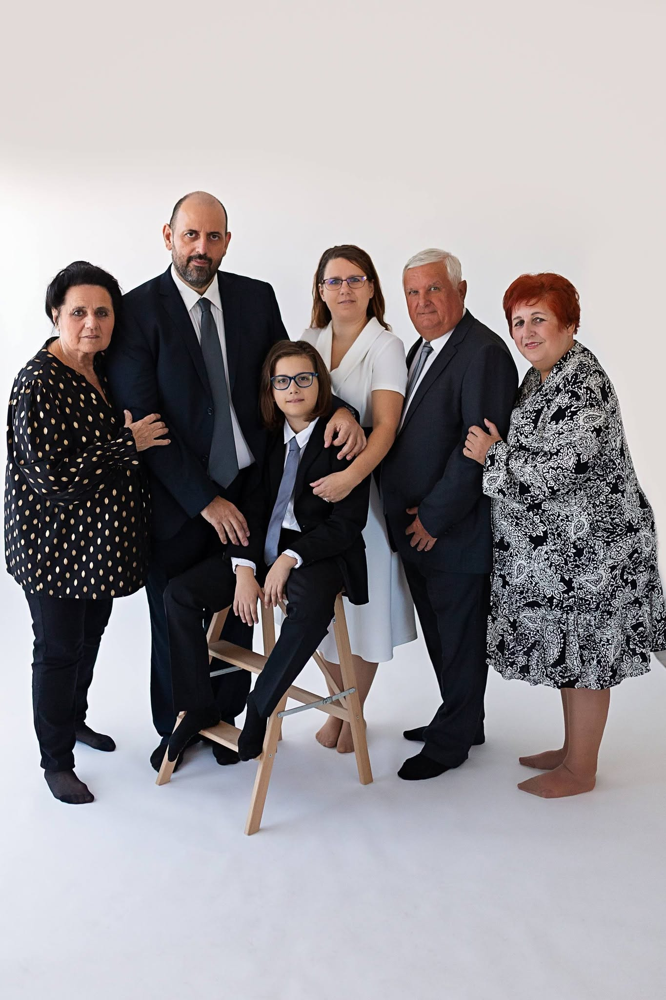
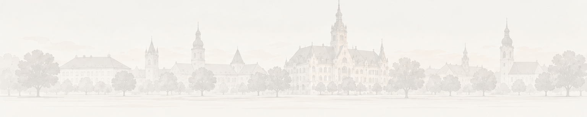

|
SVIRCEVIC.HU
DR. SVIRCEVICNIKOLA
Személyes oldal · Szakmai pálya
→DR. SVIRCEVIC-BODNÁRÁGOTA
Személyes oldal · Szakmai pálya
→SVIRCEVICNIKOLA STEVAN
Gaming · Tech · Közösség
→
CSALÁDUNK
Otthon · Élmények · Emlékek
→
Személyes oldal · Szakmai pálya
→Személyes oldal · Szakmai pálya
→Gaming · Tech · Közösség
→
Otthon · Élmények · Emlékek
→